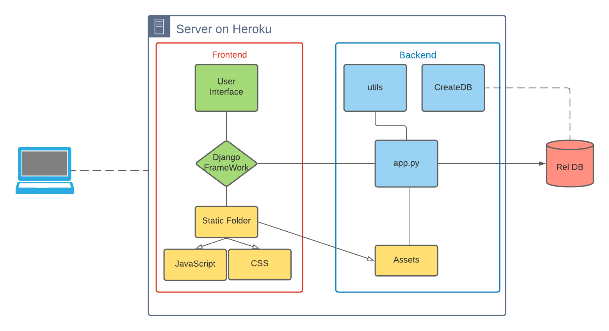

Backend Documentation
Deliverable D1
General group information
Member N.
Role
First Name
Last Name
Email Address
Links to other deliverables
Deliverable: The web application is reachable at this: address
Deliverable: The address of the online source code repository is available at this: address
Web Architecture
-

The Web server is based on an application generated by Flask FrameWork.
The user executes html requests to the server that responds with the contents of the
Templates folder. Folders contain only static files that are sent to the user's browser and are rendered locally. The
dynamic parts of the html pages are delegated to Django files.
The RestAPIs (API Platform) are managed by the app.py file that is appointed to keep the server online
and manage data traffic. Through Python methods the server is able to forward requests to the database
and respond to users.
API
REST compliance
-
We have decided to follow these guidelines: the RESTs are driven by input parameters which are carried to the
server by the requests.
OpenAPI Resource models
- Financial modelling was used to obtain all real-time company data, starting with quarterly balance sheet data in order to create price forecast regression models down to individual daily company data.
- News API was used to get the most important news related to the companies that a user put in his WatchList. From this API, the top three news items are selected according to importance and reliability of the provider.
- Yahoo Finance was used to take all the data of individual stocks and to create the charts of the technical section
The following models have been used to represent the OpenAPI resources:
Data model
.png)
The database consists of two tables and are dedicated to manage users' data and stock in their porfolio.
The tables (User and UserPF) are related to users management: in particular, the User table contains
information (names, mails, passwords), with the id_user and email as primary key about registered users, whereas the UserPF is
made up of rows, each one representing a different stock in the user's portfolio (each row is identified by the couple (id_user, Ticker)
and specifies the which stock they are following.
Tools used
-
We have used VisualStudio Code as an IDE to develop our site and we have generated a server by using
Flask.
The server is entirely written in Python with the help of SQLite to generate the database and to fill
it up.
As an interface to the DB we used SQLite3. The following Python libraries have been used:
appdirs==1.4.4, certifi==2020.12.5, click==7.1.2, distlib==0.3.1, filelock==3.0.12, Flask==1.1.2, gunicorn==20.0.4, itsdangerous==1.1.0, Jinja2==2.11.3, MarkupSafe==1.1.1, pipenv==2020.11.15, six==1.15.0, virtualenv==20.4.3, virtualenv-clone==0.5.4, Werkzeug==1.0.1, WTForms==2.3.3, requests==2.24.0, yahoofinancials==1.6, pandas-datareader==0.9.0, pandas==1.1.4, numpy==1.19.3, plotly==4.14.3, plotly-express==0.4.1, country-list==0.2.1, bs4==0.0.1, statsmodels==0.12.2